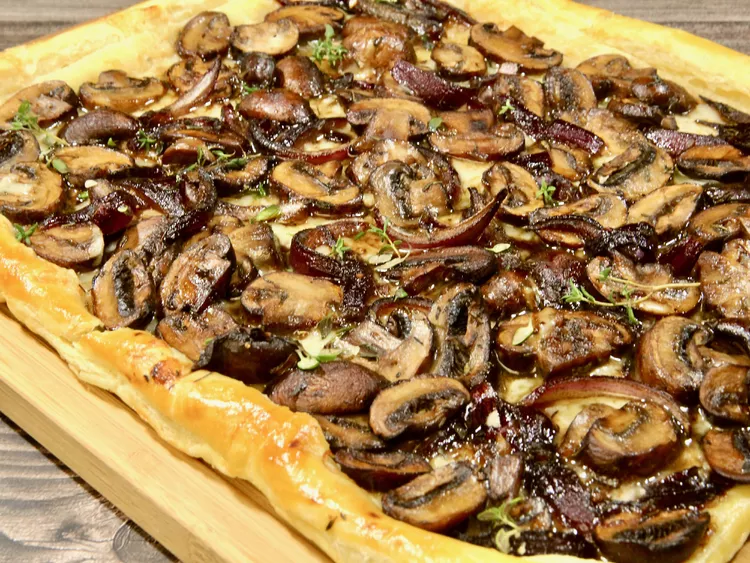

Puff Pastry Mushroom Tart

Description
This puff pastry mushroom tart is earthy, aromatic, and savory with an upscale look,
yet quick and uncomplicated to prepare using puff pastry.
Delicious served with a cup of soup or salad,
it's also a great appetizer when cut into smaller pieces.
Ingredients
- 12 ounces cremini mushrooms, such as Baby Bella®
- 1/2 red onion, sliced vertically
- 1 tablespoon olive oil
- 1 tablespoon unsalted butter
- 2 tablespoons low-sodium soy sauce
- 1 teaspoon dried thyme
- 2 garlic cloves, minced
- salt and freshly ground black pepper to taste
- 1/2 (17.3 ounce) package frozen puff pastry, thawed
- 1/2 cups shredded Gruyere cheese
- 1 large egg, beaten
- 1 teaspoon dried thyme, or as needed for garnish (optional)